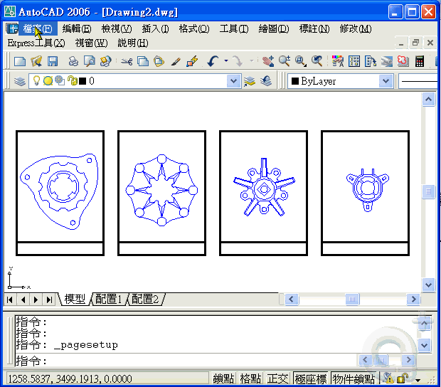
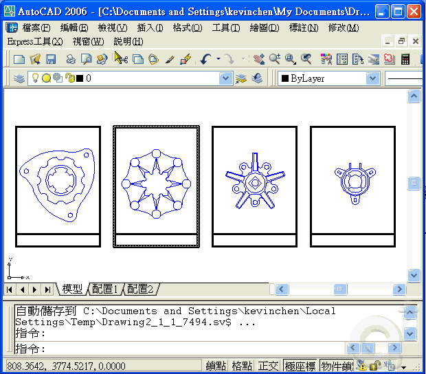

請使用「出版」PUBLISH 指令

但是須搭配「頁面設定」PAGESETUP 指令，即可大量快速的出圖

此功能為 AutoCAD 2004 以上版本的功能，輕輕鬆鬆的簡單出圖就不再是難事了。
而出圖是一門學問，其實並不難，了解運用後你會發現其實很簡單。
PS:此「出版」滿足 模型標籤或配置標籤 的出圖，只需在出版選擇 模型標籤或配置標籤即可。
「出版」的用途非常廣泛，就看你如何技巧性運用，並可依照 企業專案 來設計出圖流程，
而「出版」不只是運用在配置(圖紙)空間，在模型空間也可以使用「出版」功能。
所以出圖的工作通常第一次設定好「頁面設定」，以後就可靠「出版」來快速出圖，
所以第一次設定出圖的步驟會比較花時間，但是下一次出圖時就很輕鬆了。
PS:建議將圖檔標準化，將設定好的「頁面設定」圖檔 儲存成樣板檔(*.dwt)，
以後就不需設定出圖的步驟即可使用「出版」快速出圖。
※動態操作步驟如下:有問題請再提※

https://2img.net/h/i143.photobucket.com/albums/r134/op90o/G0020a.gif

https://2img.net/h/i143.photobucket.com/albums/r134/op90o/G0020b.gif